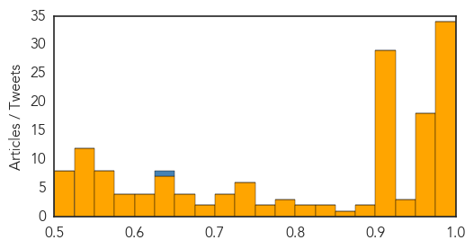
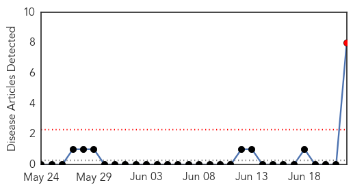
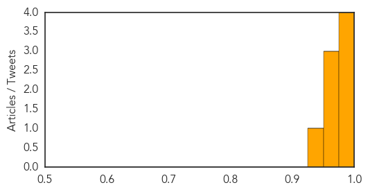

Unknown
30-Day Web Trend
14 alerts, 4 warnings

30-Day Twitter Trend
Article Locations


Article Confidences
Top Articles:
- 1.000
- Two more fatalities in South Korea MERS outbreak
- 1.000
- Two more fatalities in South Korea MERS outbreak
- 0.999
- How South Korea Is Fighting MERS
- 0.999
- S. Korea reports three new MERS cases. Health. Tengrinews.kz
- 0.999
- 3 new cases, but MERS spread is slowing
- 0.998
- (LEAD) S. Korea reports 2 more MERS deaths with 3 new cases
- 0.997
- Two more deaths, three new MERS cases reported in S. Korea
- 0.996
- S. Korea reports four new MERS cases - Regional
- 0.996
- Two more deaths push South Korea Mers toll to 27
- 0.996
- South Korea reports two more MERS deaths, as Malyasia steps up health screening at all entry points
- 0.996
- MERS: 2 deaths, 3 infections reported in South Korea
- 0.995
- South Korea reports two deaths, three new MERS cases
- 0.995
- Malaysia General Business Sports and Lifestyle News
- 0.995
- MERS test a must before arrival
- 0.995
- 2 new deaths recorded in South Korea
- 0.994
- Lusaka in typhoid alert
- 0.994
- South Korea Reports 172 MERS Cases, 27 Deaths; Thailand Reports No New Cases; Malaysia Steps Up Traveler Screening
- 0.994
- US CDC Team Visits S.Korea As More Deaths of MERS Reported
- 0.994
- Family of Thailand’s first MERS case tested for virus
- 0.993
- South Korea reports two deaths, three new MERS cases
- 0.993
- The World On Arirang
- 0.991
- Thailand extends MERS tests
- 0.991
- Malaysia steps up health screening for MERS at entry points By Reuters
- 0.991
- Malaysia steps up health screening for Mers at entry points, Government & Economy
- 0.990
- Malaysia steps up health screening for MERS at entry points
- 0.990
- Malaysia Steps Up Health Screening For MERS
- 0.989
- Malaysia steps up health screening for MERS at entry points
- 0.987
- Only teen MERS patient recovers
- 0.981
- South Korea's MERS deaths reach 23 — World News
- 0.980
- Malaysia increases health screening at all entry points amidst fears of spread
- 0.978
- MERS – Two more deaths reported from South Korea – No new cases in Thailand
- 0.977
- Pattaya News, Communities, Opinions and much more...
- 0.976
- 2 more MERS deaths in South Korea
- 0.976
- Medical tourism expertise helps Thailand cope with Mers, Government & Economy
- 0.973
- Spread of MERS virus slows as toll reaches 27
- 0.972
- MERS claims two more lives in South Korea
- 0.971
- MERS claims two more lives in South Korea
- 0.970
- Thailand still faces risk of MERS: official
- 0.967
- Ruling party chief calls for concerted efforts to fight MERS
- 0.966
- Medical tourism expertise helps Thailand cope with MERS
- 0.964
- U.S. MERS experts visit S. Korea for technical cooperation - Xinhua
- 0.964
- Thai Public Health Min holds daily MERS surveillance meeting
- 0.962
- Thailand prepared for MERS
- 0.961
- Saudi Arabia Records 7 Corona Cases during Past Week in Riyadh and Hofuf
- 0.961
- S Korea reports 2 more MERS deaths with 3 new cases, AsiaOne NewsLite
- 0.960
- Medical tourism expertise helps Thailand cope with MERS
- 0.959
- Medical tourism expertise helps Thailand cope with MERS
- 0.957
- US MERS experts visit S. Korea for technical cooperation
- 0.956
- Medical tourism expertise helps Thailand cope with MERS
- 0.956
- First lawsuit filed over state MERS response
Showing top 50 articles...
Top Tweets:
- 0.632
- Infectious disease preparedness requires ongoing investments in public health investigative and disease response capabilities.. 1/2
Yellow Fever
30-Day Web Trend
1 alerts, 0 warnings

30-Day Twitter Trend
0 alerts, 0 warnings

Article Locations


Article Confidences
Top Articles:
- 0.999
- UPDATE – Thai Muslims traveling to Hajj to be screened for MERS
- 0.999
- Thai Muslims traveling to Hajj to be screened for MERS
- 0.998
- Thai Muslims traveling to Hajj to be screened for MERS
- 0.998
- Thai Muslims traveling to Hajj to be screened for MERS
- 0.970
- Thailand to implement health checks for haj pilgrims
- 0.962
- Thailand Imposes Strict Health Measures For Muslim Hajj Pilgrims To Cease (Mers)
- 0.953
- MERS: Thailand Rolls Out Precautionary Measures For Hajj Pilgrims
- 0.948
- Haj pilgrimage spurs new MERS outbreak fear in Thailand
Top Tweets:
-
No tweets found for Jun 22, 2015